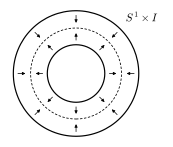
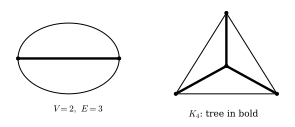

with their point-set properties, fundamental groups, homology, and the derivations behind them
Courses in topology state general theorems and then remark that fundamental groups are hard to compute for most spaces, often without showing why. This collection lists concrete spaces, their invariants, and the reasoning that produces them.
This document is a compilation of standard material, prepared with the assistance of an AI model. None of the definitions, properties, or arguments is original to the compiler. Where a space appears in the π-Base or in L. A. Steen and J. A. Seebach, Counterexamples in Topology, its entry gives the π-Base identifier with a link, and the example number and page in Steen and Seebach. The standard reference for the algebraic material is A. Hatcher, Algebraic Topology. Full references are at the end.
Each section gives the space, a figure, a table of invariants, its point-set properties, and derivations that open on request. Chapter 10 turns to applications: where these spaces appear in physics, data analysis, music theory, engineering, and economics, and which invariant matters in each case. Homology is singular homology with integer coefficients, listed as $H_0,H_1,H_2,\dots$ with trailing zeros omitted. Figures are schematic where a faithful picture is impossible. For point-set properties of many further spaces, see the π-Base, built on Steen and Seebach's Counterexamples in Topology.
Everything.A one-point space is finite, hence compact. Hausdorff holds vacuously. It is $\mathbb{R}^0$, so it is a $0$-manifold.
∎
Derivation of the fundamental group and homology
Fundamental group.There is exactly one map $[0,1]\to\{*\}$, so $\pi_1=1$.
Homology from the definition.There is one singular $n$-simplex $\sigma_n$ in each degree, so $C_n=\mathbb{Z}$. Its boundary is $\partial\sigma_n=\sum_{i=0}^n(-1)^i\sigma_{n-1}$, which is $\sigma_{n-1}$ for $n$ even and $n>0$, and $0$ for $n$ odd. The chain complex is $\cdots\xrightarrow{\ 1\ }\mathbb{Z}\xrightarrow{\ 0\ }\mathbb{Z}\xrightarrow{\ 1\ }\mathbb{Z}\xrightarrow{\ 0\ }\mathbb{Z}\to0$, which is exact except at degree $0$. So $H_0=\mathbb{Z}$ and $H_n=0$ for $n>0$.
∎
Why it is in the zoo
Reference point for contractibility and for the dimension axiom of homology.
Sources.π-Base S000025 (the case $n=1$); π-Base S000176 (the case $n=2$); Steen and Seebach, Counterexamples in Topology, Example 28, p. 56.
Derivation of the point-set properties
Not compact.The open balls $B(0,k)$, $k=1,2,\dots$, cover $\mathbb{R}^n$, and any finite subfamily lies in one ball. Equivalently, Heine–Borel fails because $\mathbb{R}^n$ is unbounded.
Path-connected, Hausdorff.The segment $t\mapsto(1-t)x+ty$ joins $x$ to $y$. Distinct points at distance $d$ have disjoint balls of radius $d/2$.
Manifold, orientable.The identity is a global chart, and a single chart is an oriented atlas.
∎
Derivation of the fundamental group and homology
Contraction.$H(x,t)=(1-t)x$ is continuous with $H_0=\mathrm{id}$ and $H_1$ constant. So $\mathbb{R}^n\simeq\{*\}$ and every homotopy invariant agrees with that of a point.
∎
Why it is in the zoo
Contractible but not compact. Compare the long line, which has trivial homotopy groups yet is not contractible.
§1.3Closed disk
$D^n$. The unit ball $\{x\in\mathbb{R}^n:|x|\le 1\}$.
Sources.Not listed in the π-Base or in Steen and Seebach.
Derivation of the point-set properties
Compact.Closed and bounded in $\mathbb{R}^n$, so compact by Heine–Borel.
Manifold with boundary.Interior points have Euclidean balls as neighborhoods. A point with $|x|=1$ has a neighborhood homeomorphic to an open subset of the half-space $\{x_n\ge0\}$, for example via radial coordinates near the boundary sphere.
∎
Derivation of the fundamental group and homology
Contraction.$D^n$ is convex, so $H(x,t)=(1-t)x$ stays in $D^n$.
Brouwer.If $r:D^n\to S^{n-1}$ were a retraction, then $S^{n-1}\hookrightarrow D^n\xrightarrow{r}S^{n-1}$ is the identity. Apply $H_{n-1}$ (with $n\ge2$): the identity of $\mathbb{Z}$ factors through $H_{n-1}(D^n)=0$, a contradiction. A map $f:D^n\to D^n$ without fixed points would give such a retraction by sending $x$ to where the ray from $f(x)$ through $x$ meets the boundary.
∎
Why it is in the zoo
Brouwer's fixed point theorem: $S^{n-1}$ is not a retract of $D^n$, proved with $H_{n-1}$.
Compact, connected.Closed and bounded in $\mathbb{R}^2$. It is the continuous image of $[0,1]$ under $t\mapsto e^{2\pi it}$, so it is path-connected.
1-manifold.Removing the point $1$ leaves an open arc homeomorphic to $(0,1)$; removing $-1$ gives a second chart. The transition maps are translations, so the atlas is oriented.
∎
Derivation of the fundamental group and homology
Covering.$p:\mathbb{R}\to S^1$, $p(t)=e^{2\pi it}$, is a covering map: each small arc has preimage a disjoint union of intervals, each mapped homeomorphically.
Degree map.A loop $\gamma$ at $1$ lifts uniquely to $\tilde\gamma$ with $\tilde\gamma(0)=0$, and $\tilde\gamma(1)\in\mathbb{Z}$. Homotopic loops have lifts with the same endpoint (homotopy lifting), so $\deg[\gamma]=\tilde\gamma(1)$ is well defined.
Isomorphism.Homomorphism: the lift of $\gamma\cdot\delta$ is $\tilde\gamma$ followed by $\tilde\delta+\tilde\gamma(1)$. Surjective: $t\mapsto e^{2\pi int}$ has degree $n$. Injective: if $\tilde\gamma(1)=0$, then $\tilde\gamma$ is a loop in the contractible $\mathbb{R}$; push a null-homotopy down by $p$.
Homology.CW structure: one $0$-cell $v$, one $1$-cell $a$. Then $\partial a=v-v=0$, so $H_0=H_1=\mathbb{Z}$ and $\chi=1-1=0$.
∎
Why it is in the zoo
The first nontrivial computation. It gives the fundamental theorem of algebra and Brouwer in dimension 2.
Compact, Hausdorff.Closed and bounded subset of $\mathbb{R}^{n+1}$.
Path-connected.Two non-antipodal points are joined by the shorter great-circle arc; antipodal points go through any third point.
Manifold, orientable.Stereographic projection from the north and south poles gives two charts onto $\mathbb{R}^n$. The transition map is inversion $x\mapsto x/|x|^2$ composed with a reflection, and the charts can be chosen so the Jacobian determinant is positive.
∎
Derivation of the fundamental group and homology
Fundamental group.Let $U=S^n\setminus\{N\}$ and $V=S^n\setminus\{S\}$. Both are homeomorphic to $\mathbb{R}^n$, and $U\cap V\cong\mathbb{R}^n\setminus\{0\}\simeq S^{n-1}$, which is path-connected for $n\ge2$. Van Kampen gives $\pi_1(S^n)\cong 1*1=1$. For $n=1$ the overlap has two components and the theorem does not apply, which is why $S^1$ is different.
Homology.CW structure $e^0\cup e^n$. The cellular chain complex is $\mathbb{Z}$ in degrees $0$ and $n$ and zero elsewhere, so every differential vanishes. Alternatively, Mayer–Vietoris with the same $U,V$ gives $\tilde H_k(S^n)\cong\tilde H_{k-1}(S^{n-1})$.
Euler characteristic.$\chi=1+(-1)^n$: $2$ for even spheres and $0$ for odd ones. Hairy ball: a nowhere-zero vector field on $S^n$ forces $\chi=0$, so even spheres have none.
Higher homotopy.$\pi_k(S^n)=0$ for $k<n$ (cellular approximation) and $\pi_n(S^n)\cong\mathbb{Z}$ by degree. Above dimension $n$ the groups are hard; see the table at the end.
∎
Why it is in the zoo
Simply connected but not contractible: the first place $\pi_1$ is too weak. $\pi_3(S^2)\cong\mathbb{Z}$ through the Hopf map.
$S^1\times I,\ \ S^1\times D^2$. Both deformation retract onto a core circle.

Figure 1.6. Annulus and solid torus.
$\pi_1$
$\mathbb{Z}$
$H_0,H_1,\dots$
$\mathbb{Z},\ \mathbb{Z},\ 0,\dots$
$\chi$
$0$
compact: yes; connected: yes; path-connected: yes; Hausdorff: yes; manifold: with boundary; orientable: yes; simply connected: no; contractible: no
Method.Deformation retract onto $S^1$.
Sources.Not listed in the π-Base or in Steen and Seebach.
Derivation of the point-set properties
Compact.Products of compact spaces.
Manifold with boundary.The annulus is a surface with two boundary circles. The solid torus is a 3-manifold whose boundary is a torus.
Orientable.Both embed as codimension-zero submanifolds of $\mathbb{R}^2$ and $\mathbb{R}^3$, which are orientable.
∎
Derivation of the fundamental group and homology
Deformation retraction.In polar coordinates on $\{1\le r\le2\}$, $H((r,\theta),t)=((1-t)r+t,\theta)$ pushes everything to $r=1$. For $S^1\times D^2$, shrink the disk factor: $(z,w,t)\mapsto(z,(1-t)w)$.
Invariants.Homotopy equivalent to $S^1$, so $\pi_1=\mathbb{Z}$, $H_1=\mathbb{Z}$, and $\chi=0$.
∎
Why it is in the zoo
$\pi_1$ ignores dimension. The solid torus is half of the genus-one Heegaard splitting of $S^3$ and of every lens space.
compact: yes; connected: yes; path-connected: yes; Hausdorff: yes; manifold: with boundary; orientable: no; simply connected: no; contractible: no
Method.Retract onto the core circle.
Sources.Not listed in the π-Base or in Steen and Seebach.
Derivation of the point-set properties
Compact, Hausdorff.Quotient of a compact square, so compact. It embeds in $\mathbb{R}^3$ by $(\theta,s)\mapsto((1+s\cos\frac\theta2)\cos\theta,(1+s\cos\frac\theta2)\sin\theta,s\sin\frac\theta2)$ with $|s|\le\frac12$, so it is Hausdorff.
Non-orientable.Carry a small oriented frame once around the core circle $y=\frac12$. The gluing $(0,y)\sim(1,1-y)$ flips the $y$-direction, so the frame returns reflected.
One boundary circle.The edge $y=0$ is glued at $x=1$ to the start of the edge $y=1$, and vice versa, so the two edges join into a single circle of twice the length.
∎
Derivation of the fundamental group and homology
Deformation retraction.$H((x,y),t)=(x,(1-t)y+\frac t2)$. It respects the gluing: $1-y\mapsto(1-t)(1-y)+\frac t2=1-[(1-t)y+\frac t2]$. At $t=1$ everything lies on the core circle.
The boundary wraps twice.Under the retraction the boundary circle traverses the core twice, so $H_1(\partial M)\to H_1(M)$ is multiplication by $2$. The annulus boundary components map by $\pm1$, which tells the two spaces apart.
∎
Why it is in the zoo
Same homotopy type as the annulus but not homeomorphic: one boundary circle, not two. Gluing a disk to its boundary gives $\mathbb{RP}^2$.
Compact, Hausdorff.Product of two compact Hausdorff spaces.
Manifold, orientable.Products of charts of $S^1$ give charts of $T^2$. In the square model, every edge appears once as $x$ and once as $x^{-1}$, which is the polygon criterion for orientability.
∎
Derivation of the fundamental group and homology
Fundamental group.A loop in $X\times Y$ is a pair of loops, and homotopies act coordinatewise, so $\pi_1(T^2)\cong\mathbb{Z}\times\mathbb{Z}$. In the square, the relation $aba^{-1}b^{-1}=1$ is the boundary of the 2-cell.
Cellular homology.One $0$-cell $v$, $1$-cells $a,b$, one $2$-cell $e$. Then $\partial a=\partial b=v-v=0$ and $\partial e=a+b-a-b=0$. All differentials vanish, so $H=\mathbb{Z},\mathbb{Z}^2,\mathbb{Z}$ and $\chi=1-2+1=0$.
Universal cover.$\mathbb{R}^2\to\mathbb{R}^2/\mathbb{Z}^2$. Since $\mathbb{R}^2$ is contractible, $T^2$ is aspherical: $\pi_k(T^2)=0$ for $k\ge2$.
∎
Why it is in the zoo
The universal cover $\mathbb{R}^2$ with deck group $\mathbb{Z}^2$ is the cleanest example of the covering correspondence.
Method.Product formula; homology from the product cell structure.
Sources.Not listed in the π-Base or in Steen and Seebach.
Derivation of the point-set properties
Compact, manifold, orientable.Finite product of compact orientable manifolds. The cube $[0,1]^n$ with opposite faces glued by translations is another model.
∎
Derivation of the fundamental group and homology
Fundamental group.Product formula, or the covering $\mathbb{R}^n\to T^n$ with deck group $\mathbb{Z}^n$.
Homology.The product CW structure has one $k$-cell for each $k$-element subset of the $n$ coordinates, so $\binom nk$ cells in degree $k$. Each circle factor has zero differential, and the product differential is built from these, so it vanishes. Hence $H_k\cong\mathbb{Z}^{\binom nk}$.
Method.Van Kampen: the 1-skeleton is a wedge of 2g circles and the 2-cell adds one relation.
Sources.Not listed in the π-Base or in Steen and Seebach.
Derivation of the point-set properties
Compact, Hausdorff.Quotient of a compact polygon. It embeds in $\mathbb{R}^3$ as the surface of a $g$-holed doughnut, so it is Hausdorff.
2-manifold.Interior points of the polygon have disk neighborhoods. An edge point gets two half-disks glued along a diameter. All $4g$ vertices go to one point, and their $4g$ corner sectors fit together around it into a full disk.
Orientable.Each edge label appears once with exponent $+1$ and once with $-1$, so the gluings reverse the boundary direction and the polygon's orientation extends across every edge.
∎
Derivation of the fundamental group and homology
Van Kampen.Let $U$ be the open 2-cell and $V$ the complement of its center. $U$ is contractible, $V$ deformation retracts onto the 1-skeleton (a wedge of $2g$ circles, so $\pi_1(V)=F_{2g}$), and $U\cap V$ is an annulus whose generator maps to the boundary word. So $\pi_1=F_{2g}/\langle\langle[a_1,b_1]\cdots[a_g,b_g]\rangle\rangle$.
Cellular homology.One $0$-cell, $2g$ $1$-cells, one $2$-cell. The boundary of the 2-cell is $\sum_i(a_i+b_i-a_i-b_i)=0$, and the $1$-cells are loops. All differentials vanish.
Euler characteristic.$\chi=1-2g+1=2-2g$. Since $H_1=\mathbb{Z}^{2g}$ determines $g$, different genera give non-homeomorphic surfaces.
∎
Why it is in the zoo
For $g\ge2$ the group is non-abelian and hyperbolic. $H_1=\mathbb{Z}^{2g}$ is its abelianization, a concrete case of Hurewicz.
Hausdorff.If $[x]\ne[y]$, choose $\varepsilon$ smaller than the distances between $\pm x$ and $\pm y$. The images of the four $\varepsilon$-balls around $\pm x,\pm y$ are disjoint open sets.
2-manifold.A small cap on $S^2$ contains no antipodal pair, so it maps homeomorphically onto its image.
Non-orientable.A neighborhood of a projective line (the image of a great circle) is a Möbius band.
∎
Derivation of the fundamental group and homology
Fundamental group.$p:S^2\to\mathbb{RP}^2$ is a covering with deck group $\{\pm1\}$. $S^2$ is simply connected, so it is the universal cover and $\pi_1\cong\mathbb{Z}/2$. The generator is the image of a path from a point to its antipode.
Cellular homology.Cells $e^0,e^1,e^2$, with $e^2$ attached along the word $aa$. The chain complex is $0\to\mathbb{Z}\xrightarrow{\ 2\ }\mathbb{Z}\xrightarrow{\ 0\ }\mathbb{Z}\to0$. So $H_0=\mathbb{Z}$, $H_1=\mathbb{Z}/2$, and $H_2=\ker(\times2)=0$.
Euler characteristic.$\chi=1-1+1=1$, consistent with $\chi(S^2)=2\chi(\mathbb{RP}^2)$ for a 2-sheeted cover.
∎
Why it is in the zoo
The smallest nontrivial finite fundamental group and the first torsion in homology. It does not embed in $\mathbb{R}^3$.
Sources.Not listed in the π-Base or in Steen and Seebach.
Derivation of the point-set properties
Compact, Hausdorff.Quotient of a square; it embeds in $\mathbb{R}^4$, so it is Hausdorff. In $\mathbb{R}^3$ it can only be immersed.
2-manifold, non-orientable.The polygon argument gives a manifold. The edge $a$ appears twice with the same exponent, so a strip across it is a Möbius band.
∎
Derivation of the fundamental group and homology
Fundamental group.One vertex, edges $a,b$, and a 2-cell attached along $abab^{-1}$. Van Kampen gives $\langle a,b\mid abab^{-1}\rangle$, equivalently $bab^{-1}=a^{-1}$.
Non-abelian.$\pi_1$ is torsion-free (the universal cover is $\mathbb{R}^2$), so $a\ne a^{-1}$, and $bab^{-1}=a^{-1}\ne a$.
Torus double cover.$b^2ab^{-2}=ba^{-1}b^{-1}=a$, so $a$ and $b^2$ commute. The subgroup $\langle a,b^2\rangle\cong\mathbb{Z}^2$ has index $2$ and corresponds to a torus double cover.
Cellular homology.$\partial a=\partial b=0$ and $\partial e=a+b+a-b=2a$. So $H_1=\mathbb{Z}\langle a,b\rangle/\langle 2a\rangle=\mathbb{Z}\oplus\mathbb{Z}/2$ and $H_2=\ker\partial_2=0$. $\chi=1-2+1=0$.
∎
Why it is in the zoo
Same Euler characteristic as the torus; homology tells them apart. $\pi_1$ is non-abelian but contains $\mathbb{Z}^2$ with index 2.
Method.A $2k$-gon with word $a_1a_1a_2a_2\cdots a_ka_k$.
Sources.Not listed in the π-Base or in Steen and Seebach.
Derivation of the point-set properties
Compact manifold.Polygon argument as for $\Sigma_g$.
Non-orientable.Each $a_i$ appears twice with the same exponent, so each contributes a Möbius band.
∎
Derivation of the fundamental group and homology
Fundamental group.One vertex, $k$ edges, one 2-cell; van Kampen gives the presentation.
Homology.$\partial e=2(a_1+\cdots+a_k)$. Change basis to $a_1,\dots,a_{k-1},s=a_1+\cdots+a_k$; then $H_1=\mathbb{Z}^{k-1}\oplus\mathbb{Z}/2$ and $H_2=0$.
Classification.$\chi=2-k$. The torsion in $H_1$ separates $N_k$ from every $\Sigma_g$, and $\chi$ separates the $N_k$ from each other.
∎
Why it is in the zoo
With $\Sigma_g$ this completes the classification of closed surfaces. Exercise: $T^2\#\mathbb{RP}^2\cong N_3$.
Method.Van Kampen with two thickened circles meeting in a contractible cross.
Sources.Not listed in the π-Base or in Steen and Seebach.
Derivation of the point-set properties
Compact, Hausdorff.A union of two circles in $\mathbb{R}^2$, closed and bounded.
Not a manifold.Removing the wedge point from a small connected neighborhood of it leaves four components. In a 1-manifold the answer would be two, and in higher-dimensional manifolds one.
∎
Derivation of the fundamental group and homology
Van Kampen.Let $U$ be circle $A$ together with a small open arc of $B$ at the wedge point, and $V$ the reverse. $U\simeq A$, $V\simeq B$, and $U\cap V$ is a contractible cross. So $\pi_1=\mathbb{Z}*\mathbb{Z}=F_2$.
Homology.One vertex and two loops, all differentials zero: $H_1=\mathbb{Z}^2$, $\chi=1-2=-1$. The abelianization map $F_2\to\mathbb{Z}^2$ forgets the order of letters.
Universal cover.The 4-valent tree, the Cayley graph of $F_2$. It is contractible, so the figure eight is a $K(F_2,1)$.
∎
Why it is in the zoo
$F_2$ is non-abelian and contains free subgroups of every countable rank. Its covering spaces are graphs one can draw.
§3.2Wedge of n circles
$\bigvee_{i=1}^n S^1\ \simeq\ \mathbb{R}^2\setminus\{p_1,\dots,p_n\}$. A rose with $n$ petals. The plane minus $n$ points deformation retracts onto one.
Sources.Not listed in the π-Base or in Steen and Seebach.
Derivation of the point-set properties
Wedge.Compact and Hausdorff as a finite union of circles in the plane; not a manifold at the wedge point when $n\ge2$.
Punctured plane.An open subset of $\mathbb{R}^2$, hence a non-compact orientable 2-manifold. It is a different space with the same homotopy type.
∎
Derivation of the fundamental group and homology
Fundamental group.Induction with van Kampen: $\pi_1(\bigvee^{n}S^1)=\pi_1(\bigvee^{n-1}S^1)*\mathbb{Z}$.
Deformation retraction.Place the punctures on a line. The plane minus the points retracts onto a chain of $n$ circles around them, which is a graph with $\chi=1-n$ and so homotopy equivalent to the rose.
Homology.$H_1=\mathbb{Z}^n$, $\chi=1-n$.
∎
Why it is in the zoo
$H_1$ sees only $\mathbb{Z}^n$ and loses the non-commutativity of $F_n$.
$\Gamma,\ V\text{ vertices},\ E\text{ edges}$. A 1-dimensional CW complex, such as the theta graph or $K_4$.

Figure 3.3. Finite connected graph.
$\pi_1$
$F_{E-V+1}$
$H_0,H_1,\dots$
$\mathbb{Z},\ \mathbb{Z}^{E-V+1},\ 0$
$\chi$
$V-E$
compact: yes; connected: yes; path-connected: yes; Hausdorff: yes; manifold: no; orientable: —; simply connected: if a tree; contractible: no
Method.Collapse a spanning tree; what remains is a wedge of circles.
Sources.Not listed in the π-Base or in Steen and Seebach.
Derivation of the point-set properties
Compact, Hausdorff.Finite CW complex.
Manifold?.Only if every vertex has degree 2, in which case $\Gamma$ is a circle.
∎
Derivation of the fundamental group and homology
Spanning tree.A finite connected graph contains a tree $T$ through all $V$ vertices, with $V-1$ edges. A finite tree is contractible: remove a leaf and its edge, and induct.
Collapse.For a CW pair with contractible subcomplex, $\Gamma\to\Gamma/T$ is a homotopy equivalence. $\Gamma/T$ has one vertex and $E-V+1$ loops, so $\pi_1=F_{E-V+1}$.
Homology.$\chi=V-E$ from the cell count, and $H_0=\mathbb{Z}$, so $\operatorname{rank}H_1=1-\chi=E-V+1$.
∎
Why it is in the zoo
Nielsen–Schreier: every subgroup of a free group is free, because covers of graphs are graphs. Theta graph: $V=2$, $E=3$, so $F_2$.
Not compact.Let $U_0$ be the union of small open arcs at the wedge point on every circle, and $U_i$ the $i$-th circle minus the wedge point. The point opposite the wedge on circle $i$ lies only in $U_i$, so no finite subcover exists.
Not first countable.Given countably many neighborhoods of the wedge point, shrink the $n$-th one on circle $n$ to get a neighborhood containing none of them. So the space is not metrizable and does not embed in $\mathbb{R}^2$.
∎
Derivation of the fundamental group and homology
Direct limit.A compact subset of a CW complex meets only finitely many cells. Every loop and every homotopy therefore lives in a finite sub-wedge, so $\pi_1=\varinjlim F_n=F_\infty$, free on countably many generators.
Method.Van Kampen; the sphere contributes nothing.
Sources.Not listed in the π-Base or in Steen and Seebach.
Derivation of the point-set properties
Compact, Hausdorff.Finite CW complex.
Not a manifold.Points on the circle have 1-dimensional neighborhoods and points on the sphere 2-dimensional ones.
∎
Derivation of the fundamental group and homology
Fundamental group.Van Kampen: $\mathbb{Z}*1=\mathbb{Z}$.
Homology.Cells $e^0,e^1,e^2$ with zero differentials: $H=\mathbb{Z},\mathbb{Z},\mathbb{Z}$, $\chi=1$.
Second homotopy group.The universal cover is $\mathbb{R}$ with a 2-sphere attached at each integer, which is homotopy equivalent to $\bigvee_{n\in\mathbb{Z}}S^2$. Covers induce isomorphisms on $\pi_2$, and Hurewicz for the simply connected cover gives $\pi_2\cong H_2=\bigoplus_{\mathbb{Z}}\mathbb{Z}$. The deck generator $t$ shifts the spheres, so as a $\mathbb{Z}[\pi_1]$-module this is $\mathbb{Z}[t,t^{-1}]$.
∎
Why it is in the zoo
$\pi_2\cong\mathbb{Z}[t,t^{-1}]$ is not finitely generated, although the space is a finite complex.
§3.6Moore space
$M(\mathbb{Z}/n,1)=S^1\cup_n e^2$. A disk attached to a circle by a map of degree $n$. For $n=2$ this is $\mathbb{RP}^2$.
Method.Attaching a 2-cell along $a^n$ adds the relation $a^n=1$.
Sources.Not listed in the π-Base or in Steen and Seebach.
Derivation of the point-set properties
Compact, Hausdorff.Finite CW complex.
Not a manifold for $n\ge3$.Near a point of the circle, $n$ sheets of the disk meet along a line, like the pages of a book. For $n=2$ two sheets meet and the result is the manifold $\mathbb{RP}^2$.
∎
Derivation of the fundamental group and homology
Fundamental group.Van Kampen with the open 2-cell and the complement of its center: $\langle a\mid a^n\rangle=\mathbb{Z}/n$.
Homology.$0\to\mathbb{Z}\xrightarrow{\ n\ }\mathbb{Z}\xrightarrow{\ 0\ }\mathbb{Z}\to0$, so $H_1=\mathbb{Z}/n$ and $H_2=0$.
∎
Why it is in the zoo
Attaching 2-cells kills elements of $\pi_1$. Every finitely presented group arises from a 2-complex this way.
Chapter 4Projective spaces and Lie groups
§4.1Real projective space
$\mathbb{RP}^n,\ n\ge 2$. Lines through the origin in $\mathbb{R}^{n+1}$; $S^n/\pm1$.
compact: yes; connected: yes; path-connected: yes; Hausdorff: yes; manifold: yes; orientable: if n odd; simply connected: no; contractible: no
Method.Universal cover $S^n$ with deck group $\{\pm1\}$; cellular differentials alternate $0$ and $2$.
Sources.Not listed in the π-Base or in Steen and Seebach.
Derivation of the point-set properties
Compact, Hausdorff, manifold.Same argument as for $\mathbb{RP}^2$: a quotient of $S^n$ by a free action of a finite group.
Orientability.The antipodal map of $S^n$ has degree $(-1)^{n+1}$. It preserves orientation, so the orientation descends to the quotient, exactly when $n$ is odd.
∎
Derivation of the fundamental group and homology
Fundamental group.For $n\ge2$, $S^n$ is simply connected, so $\pi_1\cong\{\pm1\}$.
Cell structure.$\mathbb{RP}^n=\mathbb{RP}^{n-1}\cup e^n$, with $e^n$ attached by the double cover $S^{n-1}\to\mathbb{RP}^{n-1}$. One cell in each dimension $0,\dots,n$.
Differentials.The cellular differential $d_k$ is the degree of the attaching map followed by collapsing $\mathbb{RP}^{k-2}$. This is $1+(-1)^k$: zero for $k$ odd, two for $k$ even. The chain complex is $\mathbb{Z}\xleftarrow{0}\mathbb{Z}\xleftarrow{2}\mathbb{Z}\xleftarrow{0}\mathbb{Z}\xleftarrow{2}\cdots$, which gives the table.
Euler characteristic.$\chi=\sum_{k=0}^n(-1)^k$, which is $1$ for $n$ even and $0$ for $n$ odd, consistent with $\chi(S^n)=2\chi(\mathbb{RP}^n)$.
∎
Why it is in the zoo
The standard cellular homology exercise. Orientable exactly when $n$ is odd.
Method.Double cover $SU(2)\cong S^3\to SO(3)$ by unit quaternions.
Sources.Not listed in the π-Base or in Steen and Seebach.
Derivation of the point-set properties
Compact.$SO(3)$ is closed ($A^TA=I$, $\det A=1$) and bounded (entries in $[-1,1]$) in $\mathbb{R}^9$.
Manifold, orientable.$I$ is a regular value of $A\mapsto A^TA$ on $GL_3^+$, so $SO(3)$ is a 3-manifold. Lie groups are parallelizable (translate a frame at $I$), hence orientable.
The ball model.Send $v$ in the ball of radius $\pi$ to the rotation about $v$ by angle $|v|$. This is a bijection except that $v$ and $-v$ with $|v|=\pi$ give the same rotation, so $SO(3)\cong D^3/(v\sim-v\text{ on }\partial D^3)\cong\mathbb{RP}^3$.
∎
Derivation of the fundamental group and homology
Covering.Unit quaternions $q$ act on pure quaternions $\mathbb{R}^3$ by $v\mapsto qvq^{-1}$, a rotation. The kernel of $S^3\to SO(3)$ is $\{\pm1\}$. Since $S^3$ is simply connected, $\pi_1(SO(3))\cong\mathbb{Z}/2$.
The nontrivial loop.In the ball model, a diameter from $v$ to $-v$ is a loop. Its lift to $S^3$ runs from $q$ to $-q$ and does not close. Running it twice does close up, and is null-homotopic.
Homology.From $\mathbb{RP}^3$: $\mathbb{Z},\mathbb{Z}/2,0,\mathbb{Z}$, and $\chi=0$.
∎
Why it is in the zoo
The plate trick: a rotation by $2\pi$ is not null-homotopic but a rotation by $4\pi$ is. $SO(n)$ has $\pi_1=\mathbb{Z}/2$ for every $n\ge3$.
Method.$\det:U(n)\to S^1$ with simply connected fiber $SU(n)$.
Sources.Not listed in the π-Base or in Steen and Seebach.
Derivation of the point-set properties
Compact, manifold.Closed and bounded in $\mathbb{C}^{n^2}$; a Lie group of real dimension $n^2$.
Connected.Every unitary matrix is $V\operatorname{diag}(e^{i\theta_1},\dots,e^{i\theta_n})V^*$. Shrinking all $\theta_j$ to $0$ gives a path to $I$.
∎
Derivation of the fundamental group and homology
Splitting.As spaces, $U(n)\cong SU(n)\times S^1$ via $A\mapsto(A\operatorname{diag}(\det A^{-1},1,\dots,1),\det A)$.
$SU(n)$ is simply connected.$SU(n)$ acts transitively on the unit sphere $S^{2n-1}\subset\mathbb{C}^n$ with stabilizer $SU(n-1)$. The fibration $SU(n-1)\to SU(n)\to S^{2n-1}$ and $\pi_1(S^{2n-1})=\pi_2(S^{2n-1})=0$ give $\pi_1SU(n)\cong\pi_1SU(n-1)$, down to $SU(1)=1$.
Conclusion.$\pi_1(U(n))\cong\pi_1(S^1)=\mathbb{Z}$, detected by the determinant.
Homology.The cohomology ring is an exterior algebra on classes of degrees $1,3,\dots,2n-1$, so total rank is $2^n$ and $\chi=\prod(1-1)=0$.
∎
Why it is in the zoo
The long exact sequence of a fibration is the natural tool here. Total rank of homology is $2^n$.
Sources.Not listed in the π-Base or in Steen and Seebach.
Derivation of the point-set properties
Open manifold.$\det$ is continuous, so $\{\det\ne0\}$ is open in $\mathbb{R}^{n^2}$.
Not compact.$tI$ for $t\to\infty$ is unbounded.
Two components.$\det$ maps onto $\mathbb{R}\setminus\{0\}$, which is disconnected, so $GL_n$ is too. Each half is connected because it retracts onto $SO(n)$ or its translate.
∎
Derivation of the fundamental group and homology
Gram–Schmidt.Every $A$ factors uniquely as $A=QR$ with $Q\in O(n)$ and $R$ upper triangular with positive diagonal. The space of such $R$ is convex, so $GL_n\simeq O(n)=SO(n)\sqcup(\text{reflection})\cdot SO(n)$.
Fundamental group.$SO(2)=S^1$ gives $\mathbb{Z}$. For $n\ge3$, the fibration $SO(n-1)\to SO(n)\to S^{n-1}$ gives $\pi_1SO(n)\cong\pi_1SO(3)=\mathbb{Z}/2$.
∎
Why it is in the zoo
Disconnected by the sign of the determinant, which is why orientation is a binary choice.
§4.5Complex projective space
$\mathbb{CP}^n$. Complex lines in $\mathbb{C}^{n+1}$; $S^{2n+1}/S^1$. $\mathbb{CP}^1=S^2$.
Method.One cell in each even dimension, so no 1-cells.
Sources.Not listed in the π-Base or in Steen and Seebach.
Derivation of the point-set properties
Compact, Hausdorff.Quotient of $S^{2n+1}$ by the free action of the compact group $S^1$.
Manifold, orientable.Affine charts $\{z_i\ne0\}\cong\mathbb{C}^n$ with holomorphic transitions. Complex manifolds are orientable because complex-linear maps have positive real determinant $|\det|^2$.
∎
Derivation of the fundamental group and homology
Cell structure.The points with $z_n\ne0$ can be normalized to $z_n$ real and positive, leaving $(z_0,\dots,z_{n-1})$ in an open $2n$-ball. So $\mathbb{CP}^n=\mathbb{CP}^{n-1}\cup e^{2n}$.
Homology and $\pi_1$.Cells only in even degrees, so all differentials are zero and $H_{2k}=\mathbb{Z}$. The 2-skeleton is $S^2$, and $\pi_1$ depends only on the 2-skeleton, so $\pi_1=1$. $\chi=n+1$.
Hopf fibration.The long exact sequence of $S^1\to S^3\to S^2$ gives $\pi_3(S^2)\cong\pi_3(S^3)=\mathbb{Z}$. Any two fibers are linked circles.
∎
Why it is in the zoo
All cellular differentials vanish for parity reasons. The Hopf fibration $S^1\to S^3\to\mathbb{CP}^1$ gives $\pi_3(S^2)\cong\mathbb{Z}$.
Sources.Not listed in the π-Base or in Steen and Seebach.
Derivation of the point-set properties
Compact manifold.Quotient of $S^{4n+3}$ by the free action of the unit quaternions $S^3$; real dimension $4n$, orientable.
∎
Derivation of the fundamental group and homology
Cells.Same normalization as for $\mathbb{CP}^n$ with quaternions: $\mathbb{HP}^n=\mathbb{HP}^{n-1}\cup e^{4n}$. Differentials vanish, and the 3-skeleton is a point, so $\pi_1=\pi_2=\pi_3=1$. $\chi=n+1$.
∎
Why it is in the zoo
Source of the Hopf fibration $S^3\to S^7\to S^4$, so $\pi_7(S^4)$ contains $\mathbb{Z}$.
Chapter 5Three-manifolds
§5.1Lens space
$L(p,q)$. $S^3/(\mathbb{Z}/p)$ with the generator acting by $(z,w)\mapsto(e^{2\pi i/p}z,\,e^{2\pi iq/p}w)$, $\gcd(p,q)=1$. Also two solid tori glued along their boundary.
Method.A free action on the simply connected $S^3$.
Sources.Not listed in the π-Base or in Steen and Seebach.
Derivation of the point-set properties
Compact orientable 3-manifold.The action is free because $\gcd(p,q)=1$, so no nonidentity element fixes a point of $S^3$. It is by unitary matrices, which preserve orientation, so the quotient is an orientable manifold.
Heegaard picture.Split $S^3$ into $|z|\le|w|$ and $|z|\ge|w|$, two solid tori. The action preserves both, and $L(p,q)$ is two solid tori glued so that a meridian of one goes to a curve winding $p$ times one way and $q$ times the other on the boundary torus of the second.
∎
Derivation of the fundamental group and homology
Fundamental group.$S^3\to L(p,q)$ is a $p$-sheeted universal covering, so $\pi_1\cong\mathbb{Z}/p$.
Homology.There is a CW structure with one cell in each dimension $0$ to $3$ and differentials $0,\ p,\ 0$. So $H=\mathbb{Z},\mathbb{Z}/p,0,\mathbb{Z}$, and $\chi=0$ as for every closed odd-dimensional manifold.
Classification.$L(p,q)\simeq L(p,q')$ iff $qq'\equiv\pm n^2\pmod p$ for some $n$; homeomorphic iff $q'\equiv\pm q^{\pm1}\pmod p$. The squares mod 5 are $1,4$, so $L(5,1)\not\simeq L(5,2)$. Mod 7, $2\equiv3^2$, so $L(7,1)\simeq L(7,2)$, but $2\not\equiv\pm1^{\pm1}$ and $2^{-1}=4\not\equiv\pm1$, so they are not homeomorphic.
∎
Why it is in the zoo
$L(5,1)$ and $L(5,2)$ have the same $\pi_1$ and homology but are not homotopy equivalent. $L(7,1)$ and $L(7,2)$ are homotopy equivalent but not homeomorphic.
Method.$S^3$ modulo the binary icosahedral group, acting freely by unit quaternions.
Sources.Not listed in the π-Base or in Steen and Seebach.
Derivation of the point-set properties
Compact orientable 3-manifold.Quotient of $S^3$ by a free action of a finite group of orientation-preserving isometries.
∎
Derivation of the fundamental group and homology
Fundamental group.$I^*\subset S^3$ is the preimage of the rotation group $A_5$ of the icosahedron under $S^3\to SO(3)$, of order $2\cdot60=120$. The covering $S^3\to S^3/I^*$ gives $\pi_1\cong I^*$.
Perfect group.Abelianize: $2s+2t=3s=5t$. From $2s+2t=3s$ get $s=2t$; then $3s=6t=5t$ gives $t=0$ and $s=0$. So $H_1=I^*/[I^*,I^*]=0$.
Remaining homology.Closed and orientable, so $H_3=\mathbb{Z}$. Poincaré duality and universal coefficients give $H_2\cong H^1=\operatorname{Hom}(H_1,\mathbb{Z})=0$.
∎
Why it is in the zoo
Same homology as $S^3$ but not simply connected. This is why the Poincaré conjecture is stated with $\pi_1$.
Method.$S^3$ is two solid tori; remove their cores.
Sources.Not listed in the π-Base or in Steen and Seebach.
Derivation of the point-set properties
Open 3-manifolds.Complements of closed subsets of $S^3$ are open, hence non-compact orientable 3-manifolds.
∎
Derivation of the fundamental group and homology
Unknot.$S^3=V_1\cup V_2$, two solid tori glued along a torus. Removing the core of $V_2$ leaves $V_2$ minus core $\cong T^2\times[0,1)$, which retracts onto $\partial V_1$. So $S^3\setminus U\simeq V_1\simeq S^1$.
Hopf link.The cores of $V_1$ and $V_2$ form a Hopf link. Removing both leaves $T^2\times(0,1)\simeq T^2$, so $\pi_1=\mathbb{Z}^2$, generated by the two meridians.
Unlink.A separating sphere splits the complement; van Kampen gives $\mathbb{Z}*\mathbb{Z}=F_2$, which is not $\mathbb{Z}^2$. Both have $H_1=\mathbb{Z}^2$, so homology alone does not detect linking here; $\pi_1$ does.
∎
Why it is in the zoo
Two circles are linked when the complement's group is $\mathbb{Z}^2$; the unlink gives $F_2$.
§6.2Trefoil complement
$S^3\setminus 3_1$. The complement of the simplest nontrivial knot.
Method.Wirtinger presentation from a diagram: a generator per arc, a relation per crossing.
Sources.Not listed in the π-Base or in Steen and Seebach.
Derivation of the point-set properties
Open 3-manifold.Open subset of $S^3$; non-compact, orientable.
∎
Derivation of the fundamental group and homology
Wirtinger presentation.The standard diagram has arcs $x_1,x_2,x_3$ and three crossings. Each crossing gives a relation of the form $x_{i+1}=x_i^{\pm1}x_jx_i^{\mp1}$; one relation is redundant. With suitable orientations: $x_3=x_2^{-1}x_1x_2$ and $x_1x_2x_1=x_2x_1x_2$.
Two presentations.With $a=x_1$, $b=x_2$: $\langle a,b\mid aba=bab\rangle$, the braid group $B_3$. Put $x=aba$ and $y=ab$. Then $y^3=ababab=(aba)(bab)=(aba)(aba)=x^2$.
Knotted.$a\mapsto(12)$, $b\mapsto(23)$ satisfies $aba=(13)=bab$, so the group surjects onto the non-abelian $S_3$. The unknot group $\mathbb{Z}$ has only abelian quotients.
Homology.Alexander duality: $\tilde H_k(S^3\setminus K)\cong\tilde H^{2-k}(K)=\tilde H^{2-k}(S^1)$, so $H_1=\mathbb{Z}$ and $H_2=0$ for every knot.
∎
Why it is in the zoo
Every knot complement has $H_1=\mathbb{Z}$, so homology cannot detect knotting. $\pi_1$ can: this group maps onto $S_3$, which $\mathbb{Z}$ cannot.
§6.3Configuration space
$\mathrm{UConf}_n(\mathbb{C})$. Unordered sets of $n$ distinct points in the plane. The ordered version is $\mathrm{Conf}_n(\mathbb{C})$.
Method.A loop is a motion of points that returns to the same set: a braid.
Sources.Not listed in the π-Base or in Steen and Seebach.
Derivation of the point-set properties
Manifold.$\mathrm{Conf}_n(\mathbb{C})$ is $\mathbb{C}^n$ minus the diagonals $z_i=z_j$, an open set. $S_n$ acts freely, so the quotient is a complex $n$-dimensional manifold, hence orientable.
Connected.The diagonals have real codimension $2$, so their complement is connected; any two configurations can be joined by moving points around each other.
∎
Derivation of the fundamental group and homology
Fadell–Neuwirth.Forgetting the last point, $\mathrm{Conf}_n\to\mathrm{Conf}_{n-1}$ is a fibration with fiber $\mathbb{C}$ minus $n-1$ points, a $K(F_{n-1},1)$. Induction and the long exact sequence show $\mathrm{Conf}_n$ is aspherical, with $\pi_1=P_n$ the pure braid group.
Unordered.$\mathrm{Conf}_n\to\mathrm{UConf}_n$ is an $n!$-sheeted cover, so $\pi_1=B_n$ with $1\to P_n\to B_n\to S_n\to1$.
Homology.Artin generators $\sigma_i$ satisfy $\sigma_i\sigma_{i+1}\sigma_i=\sigma_{i+1}\sigma_i\sigma_{i+1}$; abelianizing gives $\sigma_i=\sigma_{i+1}$, so $H_1=\mathbb{Z}$.
Euler characteristic.Multiplicative in fibrations: $\chi(\mathrm{Conf}_n)=\prod_{k=1}^{n-1}(1-k)=0$ for $n\ge2$, and $\chi(\mathrm{UConf}_n)=0/n!=0$.
∎
Why it is in the zoo
A finite-dimensional $K(B_n,1)$. Motion of points in the plane gives braids, not permutations.
Method.A direct limit over the stages of the construction; Alexander duality for homology.
Sources.Not listed in the π-Base or in Steen and Seebach.
Derivation of the point-set properties
Open 3-manifold.The complement of a compact set in $S^3$ is open; it is non-compact and orientable.
The sphere itself.The horned sphere is homeomorphic to $S^2$, and its inside is homeomorphic to an open ball. Only the outside is strange.
∎
Derivation of the fundamental group and homology
Homology.Alexander duality for an embedded $S^2$: $\tilde H_k(S^3\setminus S)\cong\check H^{2-k}(S^2)$ reduced, which is $\mathbb{Z}$ in degree $0$ and zero otherwise. So there are two components, each with the homology of a point.
Fundamental group.A small loop around the base of a horn cannot be slid off: at every stage it is caught by the next interlocked pair. The group is the direct limit of free groups on $2^k$ generators under maps that are injective but not surjective. It is nontrivial and not finitely generated; it is perfect since $H_1=0$.
∎
Why it is in the zoo
The Schoenflies theorem fails in dimension 3. The space is acyclic yet not simply connected.
Chapter 7Classifying spaces and complexes
§7.1Infinite sphere
$S^\infty$. The union $S^0\subset S^1\subset S^2\subset\cdots$ with the weak topology.
Method.Every compact image lies in some finite sphere and misses a point there.
Sources.Not listed in the π-Base or in Steen and Seebach.
Derivation of the point-set properties
Not compact.A compact subset of a CW complex lies in a finite subcomplex, and $S^\infty$ is not a finite subcomplex of itself.
Hausdorff.CW complexes are Hausdorff (even normal).
∎
Derivation of the fundamental group and homology
All homotopy groups vanish.A map $S^k\to S^\infty$ lands in some $S^n$; enlarging $n$ to exceed $k$, cellular approximation lets it miss a point of $S^n$, and $S^n$ minus a point is contractible.
Contractible.Whitehead's theorem: a CW complex with all $\pi_k=0$ is contractible.
∎
Why it is in the zoo
An infinite-dimensional contractible space with free actions of $\mathbb{Z}/2$ and $S^1$. It is the total space of the next two entries.
Method.Contractible universal cover $S^\infty$ with deck group $\mathbb{Z}/2$.
Sources.Not listed in the π-Base or in Steen and Seebach.
Derivation of the point-set properties
CW complex.Infinite CW complex with one cell in each dimension; not compact, Hausdorff, path-connected.
∎
Derivation of the fundamental group and homology
Homotopy.$S^\infty\to\mathbb{RP}^\infty$ is a 2-sheeted cover with contractible total space. So $\pi_1=\mathbb{Z}/2$ and $\pi_k=\pi_k(S^\infty)=0$ for $k\ge2$.
Homology.The chain complex continues the $\mathbb{RP}^n$ pattern forever: $\mathbb{Z}\xleftarrow{0}\mathbb{Z}\xleftarrow{2}\mathbb{Z}\xleftarrow{0}\mathbb{Z}\xleftarrow{2}\cdots$.
Infinite dimension forced.If a finite-dimensional $K(\mathbb{Z}/2,1)$ existed, its homology would vanish above its dimension. But group homology $H_k(\mathbb{Z}/2)$ is nonzero for every odd $k$.
∎
Why it is in the zoo
Homology in infinitely many degrees. Any $K(G,1)$ for a group with torsion must be infinite-dimensional.
Method.Long exact sequence of $S^1\to S^\infty\to\mathbb{CP}^\infty$.
Sources.Not listed in the π-Base or in Steen and Seebach.
Derivation of the point-set properties
CW complex.One cell in each even dimension; not compact.
∎
Derivation of the fundamental group and homology
Homotopy.The fibration $S^1\to S^\infty\to\mathbb{CP}^\infty$ with contractible total space gives $\pi_k(\mathbb{CP}^\infty)\cong\pi_{k-1}(S^1)$: $\mathbb{Z}$ for $k=2$, zero otherwise.
Homology.Even cells only, so $H_{2k}=\mathbb{Z}$ for all $k\ge0$.
Line bundles.Homotopy classes $[X,\mathbb{CP}^\infty]$ correspond to $H^2(X;\mathbb{Z})$ and to isomorphism classes of complex line bundles on $X$, via the first Chern class.
∎
Why it is in the zoo
Only one nonzero homotopy group, yet nonzero homology in every even degree. It classifies complex line bundles.
Sources.π-Base S000032; Steen and Seebach, Counterexamples in Topology, Example 38, p. 65.
Derivation of the point-set properties
Compact.Tychonoff's theorem; for a countable product of compact metric spaces a diagonal argument suffices.
Metrizable.$d(x,y)=\sum_n2^{-n}|x_n-y_n|$ induces the product topology.
Not a finite-dimensional manifold.It contains $[0,1]^n$ for every $n$ in every open set, so by invariance of domain no open set is homeomorphic to an open subset of $\mathbb{R}^m$.
∎
Derivation of the fundamental group and homology
Contractible.$H(x,t)=(1-t)x$ is continuous in the product topology.
Fixed points.Every continuous self-map has a fixed point (Schauder–Tychonoff).
∎
Why it is in the zoo
Compact by Tychonoff, infinite-dimensional, homogeneous. Every compact metric space embeds in it.
Chapter 8Pathological spaces
§8.1Hawaiian earring
$\mathbb{H}=\bigcup_n C_n$. Circles $C_n$ of radius $1/n$ centered at $(1/n,0)$, with the subspace topology from $\mathbb{R}^2$.
Compact.Closed and bounded in $\mathbb{R}^2$. This is the difference from the CW wedge, whose topology is finer.
Not semilocally simply connected.Every neighborhood of the origin contains all $C_n$ for large $n$. The retraction $r_n:\mathbb{H}\to C_n$ that collapses the other circles shows $C_n$ is not null-homotopic in $\mathbb{H}$. So small loops at the origin are never trivial, and $\mathbb{H}$ has no simply connected cover.
∎
Derivation of the fundamental group and homology
Retractions.Collapsing $C_{n+1},C_{n+2},\dots$ retracts $\mathbb{H}$ onto the finite wedge $\bigvee_{i\le n}C_i$. These give compatible surjections $\pi_1(\mathbb{H})\to F_n$ and a homomorphism $\pi_1(\mathbb{H})\to\varprojlim F_n$, which is injective but not surjective.
Uncountable.A loop can run around $C_1$ in time $[0,\frac12]$, $C_2$ in $[\frac12,\frac34]$, and so on, and still be continuous at $t=1$ because the circles shrink. Choosing which circles to traverse gives $2^{\aleph_0}$ loops with distinct images in $\varprojlim F_n$.
Not free.Every finitely generated subgroup is free, but the whole group is not (Higman). $H_1$, the abelianization, is uncountable.
∎
Why it is in the zoo
The standard example where computing $\pi_1$ is hard. It has no universal cover. Compare the infinite wedge of circles.
§8.2Warsaw circle
$W$. The closed topologist's sine curve with its two ends joined by an arc.
Compact, path-connected.Closed and bounded in $\mathbb{R}^2$. The extra arc joins the limit segment to the end of the curve, so it is path-connected, unlike the sine curve.
Not locally connected.Near a point of the limit segment, every small ball meets infinitely many separate pieces of the oscillating curve.
∎
Derivation of the fundamental group and homology
Paths cannot go around.No path travels from the limit segment into the oscillating curve, for the same reason the topologist's sine curve is not path-connected. So the compact image of any $S^k\to W$ omits some point $p$ of the oscillating part.
Weakly contractible.Each path component of $W\setminus\{p\}$ is contractible, and the image of a sphere lies in one of them, so every map $S^k\to W$ is null-homotopic. All $\pi_k(W)=0$, and the map to a point is a weak equivalence, so singular homology is that of a point.
Not contractible.$W$ is the intersection of nested annular neighborhoods, so its Čech cohomology is $\check H^1(W)=\varinjlim\check H^1(\text{annulus})=\mathbb{Z}$. Čech cohomology is a homotopy invariant and vanishes on contractible spaces.
∎
Why it is in the zoo
All homotopy groups vanish but $W$ is not contractible, so Whitehead's theorem needs the CW hypothesis. Čech cohomology sees the circle: $\check H^1(W)\cong\mathbb{Z}$.
§8.3Topologist's sine curve
$\overline{\{(x,\sin\tfrac1x):0<x\le1\}}$. The graph together with the limit segment $\{0\}\times[-1,1]$.
Sources.π-Base S000114; Steen and Seebach, Counterexamples in Topology, Example 117, p. 137.
Derivation of the point-set properties
Compact, connected.It is the closure of the graph, a connected set, and closures of connected sets are connected. Closed and bounded, so compact.
Not path-connected.Suppose $\gamma$ is a path from $(0,0)$ to a point of the graph. Let $t_0$ be the last time $\gamma$ is on the segment. Just after $t_0$ the $x$-coordinate is positive and tends to $0$, so the $y$-coordinate $\sin(1/x)$ takes both values $\pm1$ in every interval $(t_0,t_0+\delta)$. This contradicts continuity of $\gamma$ at $t_0$.
∎
Derivation of the fundamental group and homology
Homology.The path components are the graph $\cong(0,1]$ and the segment $\cong[-1,1]$, both contractible. Singular homology is the direct sum over path components: $H_0=\mathbb{Z}^2$, the rest zero. $\chi=2$.
∎
Why it is in the zoo
Connected but not path-connected. Singular $H_0$ counts path components, not components.
§8.4Comb space
$C$. The base $[0,1]\times\{0\}$ with vertical unit teeth at $x=0$ and at each $x=1/n$.
Method.Slide the teeth down to the base, then contract the base.
Sources.Not listed in the π-Base or in Steen and Seebach.
Derivation of the point-set properties
Compact.Closed and bounded: the teeth at $1/n$ accumulate on the tooth at $0$, which is included.
Not locally connected.A small ball around $(0,y)$ with $y>0$ meets infinitely many teeth in disjoint segments.
∎
Derivation of the fundamental group and homology
Contraction.First $H((x,y),t)=(x,(1-t)y)$ for $t\in[0,1]$, which slides every tooth down along itself; then contract $[0,1]\times\{0\}$ to a point.
No strong deformation retraction to $(0,1)$.During such a homotopy, points $(1/n,1)$ near $(0,1)$ must stay near $(0,1)$ for small times, but to reach it they must travel down their tooth and along the base. Continuity at $(0,1)$ fails.
∎
Why it is in the zoo
Contractible but not locally connected, and it does not deformation retract onto $(0,1)$ while keeping that point fixed.
§8.5Dyadic solenoid
$\Sigma_2=\varprojlim\big(S^1\xleftarrow{z^2}S^1\xleftarrow{z^2}\cdots\big)$. The inverse limit of circles under the doubling map; a compact connected abelian group.
Method.Path components are dense continuous images of $\mathbb{R}$, uncountably many.
Sources.Not listed in the π-Base or in Steen and Seebach.
Derivation of the point-set properties
Compact, Hausdorff.A closed subset of the compact metrizable product $\prod S^1$.
Connected.An inverse limit of compact connected Hausdorff spaces is connected.
Locally a Cantor set times an interval.A small neighborhood looks like an arc times the 2-adic integers, so the space is not locally connected.
∎
Derivation of the fundamental group and homology
Path components.$t\mapsto(e^{2\pi it},e^{\pi it},e^{\pi it/2},\dots)$ maps $\mathbb{R}$ injectively onto the path component of the identity. The other path components are its cosets, and there are $2^{\aleph_0}$ of them.
Čech cohomology.Čech cohomology turns inverse limits of compact spaces into direct limits: $\check H^1(\Sigma_2)=\varinjlim(\mathbb{Z}\xrightarrow{2}\mathbb{Z}\xrightarrow{2}\cdots)=\mathbb{Z}[1/2]$.
∎
Why it is in the zoo
Connected with uncountably many path components. Čech cohomology $\check H^1\cong\mathbb{Z}[1/2]$ records the inverse limit; singular theory does not.
Method.Totally disconnected, so every path is constant.
Sources.π-Base S000026; Steen and Seebach, Counterexamples in Topology, Example 29, p. 57.
Derivation of the point-set properties
Compact.An intersection of closed subsets of $[0,1]$.
Totally disconnected.Between two points of $C$ there is a removed open interval. Splitting at it writes $C$ as a union of two disjoint clopen sets separating the points.
Perfect.Every point is a limit of endpoints of the construction.
Product model.Ternary expansions with digits $0,2$ give a homeomorphism $C\to\{0,2\}^{\mathbb{N}}$.
∎
Derivation of the fundamental group and homology
Homology.A path has connected image, which must be a point. Singular simplices are constant, so the chain complex is a direct sum of copies of that of a point, one for each element of $C$.
∎
Why it is in the zoo
Compact, perfect, totally disconnected, and metrizable. Every compact metric space is a continuous image of it.
Method.Every compact subset lies in a countable initial segment, which is an interval.
Sources.π-Base S000038; Steen and Seebach, Counterexamples in Topology, Example 45, p. 71.
Derivation of the point-set properties
Connected.A linearly ordered set with the least upper bound property and no gaps is connected in the order topology.
Locally Euclidean, not second countable.Each point has a neighborhood order-isomorphic to an open interval. The open intervals $(\alpha\times\{\frac12\},(\alpha+1)\times\{\frac12\})$ form an uncountable disjoint family, which a countable base cannot accommodate.
Not compact, not metrizable.It is sequentially compact, since every countable set is bounded, but not compact: the initial segments cover it with no finite subcover. A metric space that is sequentially compact is compact, so $L$ is not metrizable.
∎
Derivation of the fundamental group and homology
Homotopy groups.A countable ordinal $\alpha$ gives an initial segment $[0,\alpha]\cong[0,1]$. Every compact image of a sphere lies in such a segment, so it is null-homotopic.
Not contractible.A contraction would be a homotopy $L\times[0,1]\to L$. An argument with closed unbounded subsets of $\omega_1$ shows this is impossible.
∎
Why it is in the zoo
Locally Euclidean and Hausdorff but not second countable. All homotopy groups vanish, yet it is not contractible.
§8.8Rationals
$\mathbb{Q}$. Subspace topology from $\mathbb{R}$.
Sources.π-Base S000027; Steen and Seebach, Counterexamples in Topology, Example 30, p. 59.
Derivation of the point-set properties
Totally disconnected.For rationals $p<q$ pick an irrational $r$ between them; $(-\infty,r)\cap\mathbb{Q}$ is clopen.
Not locally compact.The closure in $\mathbb{Q}$ of any interval $(a,b)\cap\mathbb{Q}$ contains sequences converging to irrationals, which have no convergent subsequence in $\mathbb{Q}$.
∎
Derivation of the fundamental group and homology
Homology.Paths are constant, so $H_0$ is free on the countably many points and the rest vanishes.
∎
Why it is in the zoo
Not locally compact. Every countable metric space with no isolated points is homeomorphic to $\mathbb{Q}$ (Sierpiński).
§8.9Sorgenfrey line
$\mathbb{R}_\ell$. $\mathbb{R}$ with basis the half-open intervals $[a,b)$.
Sources.π-Base S000043; Steen and Seebach, Counterexamples in Topology, Example 51, p. 75.
Derivation of the point-set properties
Totally disconnected.$[a,b)$ is open, and its complement $(-\infty,a)\cup[b,\infty)$ is a union of basic sets, so $[a,b)$ is also closed.
Countability.$\mathbb{Q}$ is dense and $[x,x+\frac1n)$ is a countable local base. Any base must contain, for each $x$, a set with minimum $x$, so it is uncountable.
The Sorgenfrey plane.The antidiagonal $\{(x,-x)\}$ is closed and discrete in $\mathbb{R}_\ell^2$ and has size $2^{\aleph_0}$. Jones' lemma then shows the separable space $\mathbb{R}_\ell^2$ is not normal.
∎
Derivation of the fundamental group and homology
Homology.Connected subsets are points, so paths are constant and $H_0$ is free on $2^{\aleph_0}$ generators.
∎
Why it is in the zoo
Normal and Lindelöf, but $\mathbb{R}_\ell\times\mathbb{R}_\ell$ is not normal. Separable and first countable but not second countable.
Chapter 9Non-Hausdorff and finite spaces
§9.1Line with two origins
$\mathbb{R}\sqcup\mathbb{R}/(x\sim x,\ x\ne0)$. Two copies of $\mathbb{R}$ glued everywhere except at $0$.
Locally Euclidean, second countable.Each copy of $\mathbb{R}$ is open and is a chart.
Not Hausdorff.Every neighborhood of $0_1$ and every neighborhood of $0_2$ contain $(-\varepsilon,\varepsilon)\setminus\{0\}$ for some $\varepsilon$, so they meet.
∎
Derivation of the fundamental group and homology
A loop.Go from $1$ to $0_1$ to $-1$ in the first copy, then from $-1$ to $0_2$ to $1$ in the second copy. This loop is not null-homotopic.
Mayer–Vietoris.Use $U,V$ the two copies, each contractible, with $U\cap V=\mathbb{R}\setminus\{0\}$, two contractible pieces. Mayer–Vietoris holds for open covers of any space: $0\to H_1(X)\to H_0(U\cap V)$ $\to H_0(U)\oplus H_0(V)\to H_0(X)\to0$, where $H_0(U\cap V)=\mathbb{Z}^2$ and $H_0(U)\oplus H_0(V)=\mathbb{Z}^2$. The middle map is $(x,y)\mapsto(x+y,-x-y)$, with kernel $\mathbb{Z}$. So $H_1=\mathbb{Z}$.
Fundamental group.The groupoid form of van Kampen gives $\pi_1=\mathbb{Z}$; the space is weakly equivalent to $S^1$.
∎
Why it is in the zoo
Locally Euclidean and second countable; only Hausdorff fails, and that alone produces $\pi_1\cong\mathbb{Z}$.
§9.2Pseudocircle
$\mathbb{S}=\{a,b,c,d\}$. Four points; open sets generated by $\{a\},\{b\},\{a,b,c\},\{a,b,d\}$.
Path-connected.$\gamma(0)=c$, $\gamma(t)=a$ for $t>0$ is continuous: the preimage of each open set is $\emptyset$, $(0,1]$, or $[0,1]$. Similar paths join every pair of points.
$T_0$, not $T_1$.$\{a\}$ is not closed, since its complement $\{b,c,d\}$ is not open. Distinct points are distinguished by some open set.
∎
Derivation of the fundamental group and homology
Van Kampen picture.$U=\{a,b,c\}$ and $V=\{a,b,d\}$ are open and contractible (each contracts onto its closed point $c$ or $d$). $U\cap V=\{a,b\}$ is discrete with two points. This is the same pattern as the line with two origins, so $\pi_1=\mathbb{Z}$ and $H_1=\mathbb{Z}$.
Order complex.The specialization order has $a,b<c$ and $a,b<d$. The order complex has vertices $a,b,c,d$ and edges $ac,ad,bc,bd$, a square, which is a circle.
∎
Why it is in the zoo
A four-point space with $\pi_1\cong\mathbb{Z}$. Every finite simplicial complex is weakly equivalent to a finite space.
Method.Contract everything to the open point at once.
Sources.π-Base S000010; Steen and Seebach, Counterexamples in Topology, Example 11, p. 44.
Derivation of the point-set properties
Not $T_1$.$\{1\}$ is not closed.
Classifies open sets.$f:X\to\{0,1\}$ is continuous iff $f^{-1}(1)$ is open.
∎
Derivation of the fundamental group and homology
Contraction.$H(x,0)=x$ and $H(x,t)=1$ for $t>0$. The preimage of $\{1\}$ is $(\{0,1\}\times(0,1])\cup(\{1\}\times[0,1])$, which is open, so $H$ is continuous.
∎
Why it is in the zoo
$T_0$ but not $T_1$. Continuous maps from $X$ to it correspond to open subsets of $X$.
Method.Sierpiński's theorem forces every path to be constant.
Sources.π-Base S000015; Steen and Seebach, Counterexamples in Topology, Example 18, p. 49.
Derivation of the point-set properties
Compact.Any nonempty open set misses only finitely many points, which finitely many more sets cover.
$T_1$, not Hausdorff, connected.Points are closed. Two nonempty open sets have finite complements in an infinite set, so they intersect; in particular no separation exists.
Not path-connected.For a path $\gamma:[0,1]\to\mathbb{N}$, the fibers $\gamma^{-1}(n)$ are disjoint closed sets covering $[0,1]$, countably many. Sierpiński's theorem: a compact connected Hausdorff space is not a countable union of two or more disjoint nonempty closed sets. So one fiber is everything and $\gamma$ is constant.
Uncountable case.On $\mathbb{R}$, any injection $[0,1]\to\mathbb{R}$ is continuous for the cofinite topology, since preimages of finite sets are finite and hence closed.
∎
Derivation of the fundamental group and homology
Homology.Paths are constant, so $H_0$ is free on the points and the rest vanishes.
∎
Why it is in the zoo
$T_1$, compact, connected, but not path-connected. On an uncountable set such as $\mathbb{R}$ the cofinite topology is path-connected.
The spaces in this zoo were not invented for their own sake. Each section below names a problem from physics, data analysis, music theory, engineering, or economics, the spaces it uses, and the invariant that does the work. Links lead back to the entries where those invariants are derived.
Quantum states only need to be defined up to a phase, so a rotation can act on a state through the universal cover $SU(2)\cong S^3$ instead of through $SO(3)$ itself. Because $\pi_1(SO(3))$ has order two, there are exactly two possibilities: a rotation by $2\pi$ acts as $+1$ (integer spin) or as $-1$ (half-integer spin). Electrons, protons, and neutrons are of the second kind. The sign change was observed directly in 1975 by sending neutrons through an interferometer, rotating the spin on one arm by $2\pi$, and watching the interference pattern invert; a rotation by $4\pi$ restores it. The belt trick is the same fact for a physical belt: a $2\pi$ twist cannot be undone without rotating the buckle, a $4\pi$ twist can.
H. Rauch et al., Verification of coherent spinor rotation of fermions, Physics Letters A 54 (1975) 425.
S. A. Werner et al., Observation of the phase shift of a neutron due to precession in a magnetic field, Phys. Rev. Lett. 35 (1975) 1053.
A long shielded solenoid confines its magnetic field to a thin tube, so electrons moving around it travel through a region where the field is zero. That region is the plane minus a disk, which deformation retracts onto a circle. Each path an electron can take has a winding number around the solenoid, and the quantum phase it picks up is $e^{iq\Phi n/\hbar}$, where $\Phi$ is the enclosed flux and $n$ the winding number. Two beams passing on opposite sides differ by one winding, so their interference pattern shifts with $\Phi$ even though no force acts on either beam. The effect is measurable precisely because the field-free region is not simply connected: in a simply connected region, a field-free potential could be gauged away entirely.
Y. Aharonov and D. Bohm, Significance of electromagnetic potentials in the quantum theory, Phys. Rev. 115 (1959) 485.
The configuration space of $n$ identical particles is the space of unordered $n$-point subsets. Exchanging particles traces a loop in it, and the quantum state picks up a phase determined by a one-dimensional representation of its fundamental group. In three dimensions the diagonals have codimension three, the fundamental group is the symmetric group $S_n$, and the only one-dimensional representations give bosons ($+1$) and fermions ($-1$). In the plane the fundamental group is the braid group $B_n$, whose abelianization is $\mathbb{Z}$, so any phase $e^{i\theta}$ can occur. These intermediate particles, anyons, describe excitations of fractional quantum Hall systems, and non-abelian versions are the basis of proposals for topological quantum computing.
J. M. Leinaas and J. Myrheim, On the theory of identical particles, Il Nuovo Cimento B 37 (1977) 1.
F. Wilczek, Quantum mechanics of fractional-spin particles, Phys. Rev. Lett. 49 (1982) 957.
Figure 10.4. Topological defects in ordered media.
An ordered medium assigns to each point a value in an order parameter space $M$. Around a line defect the order parameter traces a loop in $M$, so line defects are classified by $\pi_1(M)$, and point defects in three dimensions by $\pi_2(M)$. In superfluid helium the order parameter is a phase in $S^1$, and $\pi_1=\mathbb{Z}$ means vortices carry an integer winding number. In a nematic liquid crystal the molecules are rods with no head or tail, so the order parameter is a line through the origin, a point of $\mathbb{RP}^2$. Since $\pi_1(\mathbb{RP}^2)=\mathbb{Z}/2$, there is exactly one kind of stable line defect, the half-integer disclination, and two of them can annihilate. Point defects (hedgehogs) are classified by $\pi_2(\mathbb{RP}^2)=\mathbb{Z}$.
N. D. Mermin, The topological theory of defects in ordered media, Rev. Mod. Phys. 51 (1979) 591.
A magnetic monopole would have a field on the sphere surrounding it that cannot be written with a single vector potential. Instead one uses two potentials on the northern and southern hemispheres, related on the equator by a gauge transformation $S^1\to U(1)$. For the electron's wavefunction to be single-valued, this transition function must be a closed loop in $U(1)$, which has a winding number in $\pi_1(U(1))=\mathbb{Z}$. The result is Dirac's condition that electric charge times magnetic charge is an integer multiple of a fixed constant. Geometrically, the monopole is a circle bundle over $S^2$, and the one with winding number one is the Hopf fibration $S^3\to S^2=\mathbb{CP}^1$.
P. A. M. Dirac, Quantised singularities in the electromagnetic field, Proc. Roy. Soc. A 133 (1931) 60.
In Euclidean $SU(2)$ Yang–Mills theory, a finite-action field must approach a pure gauge at infinity. The sphere at infinity in $\mathbb{R}^4$ is $S^3$, so the boundary data is a map $S^3\to SU(2)\cong S^3$, which has an integer degree. This degree is the instanton number. Configurations with different degrees cannot be deformed into each other, which splits the vacuum into sectors labeled by integers and leads to the $\theta$-parameter of QCD. The same group $\pi_3(S^3)=\mathbb{Z}$ appears in the sphere entry as the statement that $\pi_n(S^n)=\mathbb{Z}$.
A. A. Belavin, A. M. Polyakov, A. S. Schwartz, Yu. S. Tyupkin, Pseudoparticle solutions of the Yang–Mills equations, Phys. Lett. B 59 (1975) 85.
Electron momenta in a two-dimensional crystal are periodic in both directions, so the space of momenta, the Brillouin zone, is a torus $T^2$. Each filled energy band gives a line bundle over this torus, a map $T^2\to\mathbb{CP}^\infty$ up to homotopy, and such a bundle has an integer invariant, the first Chern number. Thouless, Kohmoto, Nightingale, and den Nijs showed that the Hall conductance equals $e^2/h$ times the sum of these integers. This explains why the measured conductance sits on plateaus at exact integer multiples, to parts per billion, regardless of impurities in the sample. Topological insulators extend the same idea to other classes of bundles.
D. J. Thouless, M. Kohmoto, M. P. Nightingale, M. den Nijs, Quantized Hall conductance in a two-dimensional periodic potential, Phys. Rev. Lett. 49 (1982) 405.
§10.8Qubits, the Bloch sphere, and geometric phase
A quantum state is a unit vector up to a phase, so the pure states of an $n$-level system form $\mathbb{CP}^{n-1}$. For a qubit this is $\mathbb{CP}^1\cong S^2$, the Bloch sphere used throughout quantum computing. When a spin-one-half system is carried slowly around a closed loop on this sphere, it returns with an extra phase equal to minus half the solid angle the loop encloses. This geometric (Berry) phase depends only on the path in $\mathbb{CP}^1$, not on how fast it is traversed, and it is the holonomy of the Hopf bundle $S^3\to S^2$.
M. V. Berry, Quantal phase factors accompanying adiabatic changes, Proc. Roy. Soc. A 392 (1984) 45.
Kitaev's toric code places qubits on the edges of a square lattice drawn on a torus. Its ground states are labeled by $H_1(T^2;\mathbb{Z}/2)=(\mathbb{Z}/2)^2$, so there are four of them, and they store two logical qubits. A logical operation is a string of flips along a loop that wraps the torus; a contractible loop does nothing. Local noise produces short strings that bound small regions, which can be detected and corrected, while changing the stored information requires an error chain that wraps all the way around. On a surface of genus $g$ the code stores $2g$ qubits. This homological idea underlies the surface codes used in current quantum error-correction experiments.
A. Yu. Kitaev, Fault-tolerant quantum computation by anyons, Annals of Physics 303 (2003) 2.
General relativity fixes the local geometry of space but not its global topology. If space were a quotient of $S^3$ or $\mathbb{R}^3$ by a group of isometries, light could reach us along several paths, and the cosmic microwave background would contain pairs of matching circles. In 2003 Luminet and collaborators proposed that space is the Poincaré homology sphere, a dodecahedron with opposite faces glued, to explain the unusually weak large-angle correlations seen by WMAP. Later searches for matching circles, including with Planck data, found no such signal, and the proposal is now disfavored. The example shows how a quotient $S^3/\pi_1$ makes a concrete, testable prediction.
J.-P. Luminet, J. R. Weeks, A. Riazuelo, R. Lehoucq, J.-P. Uzan, Dodecahedral space topology as an explanation for weak wide-angle temperature correlations in the cosmic microwave background, Nature 425 (2003) 593. Link
§10.11Chaotic dynamics: the horseshoe and the solenoid
Smale's horseshoe stretches a square, folds it, and lays it back over itself. The points that stay in the square forever form a Cantor set, and on it the map is the shift on two-sided sequences of $0$s and $1$s, so the dynamics contains periodic orbits of every period and orbits that are dense. The solenoid arises the same way from a solid torus: stretch it to twice its length, thin it, and wrap it twice around inside itself. The intersection of all the images is the dyadic solenoid, a compact attractor that is locally a Cantor set times an interval. Both spaces enter dynamics as invariant sets that a computer simulation shows only as a blur.
Carlsson, Ishkhanov, de Silva, and Zomorodian took millions of $3\times3$ pixel patches from photographs, kept the high-contrast ones, and normalized them to points on a 7-sphere. Persistent homology of the densest region showed a circle: patches that look like an edge at some angle. A larger region showed a space with the mod 2 homology of a Klein bottle, which they explained by a model in which each patch is a linear or quadratic profile in some direction. The direction gives one circle and the profile's position gives another, and the identifications between them are those of the Klein bottle. The model has since been used to build features for image analysis.
G. Carlsson, T. Ishkhanov, V. de Silva, A. Zomorodian, On the local behavior of spaces of natural images, Int. J. Computer Vision 76 (2008) 1. Link
Grid cells in the entorhinal cortex fire when an animal is at the vertices of a triangular lattice in its environment. A network of such cells encodes position modulo that lattice, which predicts that the joint activity of a module should lie on a torus. Gardner and collaborators recorded hundreds of grid cells in rats and applied persistent homology to the population activity. They found one component, two independent 1-dimensional loops, and one 2-dimensional class, the Betti numbers $1,2,1$ of $T^2$, and the torus persisted during sleep. Head-direction cells, which encode the direction an animal faces, give a circle in the same way.
R. J. Gardner et al., Toroidal topology of population activity in grid cells, Nature 602 (2022) 123.
R. Chaudhuri et al., The intrinsic attractor manifold and population dynamics of a canonical cognitive circuit across waking and sleep, Nature Neuroscience 22 (2019) 1512.
A finite set of data points has no interesting topology by itself. Persistent homology connects points closer than $\varepsilon$, fills in simplices, and tracks how the homology of the resulting complex changes as $\varepsilon$ grows. Classes that persist over a long range of $\varepsilon$ are read as features of the shape the data was sampled from; short-lived ones as noise. The output is a barcode, one bar per class. A long bar in degree $1$ says the data loops around, as in the circle entry; a long bar in degree $2$ says it encloses a void, as in the sphere entry. The graph entry is the case $\varepsilon$ small: a graph's $H_1$ counts its independent cycles.
G. Carlsson, Topology and data, Bull. Amer. Math. Soc. 46 (2009) 255.
R. Ghrist, Barcodes: the persistent topology of data, Bull. Amer. Math. Soc. 45 (2008) 61.
Scatter sensors over a region; each can detect nearby intruders and can tell which other sensors are within range, but none knows its coordinates. De Silva and Ghrist showed that the communication graph alone can certify coverage. From it one builds a simplicial complex $R$ and a subcomplex $F$ along the fence at the boundary. If a certain relative homology class in $H_2(R,F)$ is nonzero, the sensing disks cover the whole region with no holes. The argument is the disk entry in disguise: a hole would let the boundary circle retract off the disk, which the homology class forbids.
V. de Silva and R. Ghrist, Coverage in sensor networks via persistent homology, Algebraic and Geometric Topology 7 (2007) 339.
Since $S^1$ is a $K(\mathbb{Z},1)$, homotopy classes of maps from a space to the circle correspond to classes in $H^1(X;\mathbb{Z})$. De Silva, Morozov, and Vejdemo-Johansson turned this into an algorithm: find a persistent integer cohomology class in a point cloud, then compute a smoothest representative and read it as an angle-valued coordinate. The result assigns each data point a phase. It applies to any data governed by a cyclic parameter, such as a phase of a biological cycle or a position in a repeated rhythmic pattern. The same principle with $\mathbb{RP}^\infty$ and $\mathbb{CP}^\infty$ gives coordinates for other cohomology classes.
V. de Silva, D. Morozov, M. Vejdemo-Johansson, Persistent cohomology and circular coordinates, Discrete Comput. Geom. 45 (2011) 737.
Music theory
§10.17Octave equivalence and the pitch-class circle
Measure pitch in semitones on the real line. Treating pitches an octave apart as the same note identifies $x$ with $x+12$, and the quotient $\mathbb{R}/12\mathbb{Z}$ is a circle. Transposition is rotation and inversion is reflection, so the symmetries of pitch-class space form the dihedral group of the circle. The covering map $\mathbb{R}\to S^1$ is audible: a Shepard tone rises step by step and returns to its starting note, tracing a loop of degree one in pitch-class space whose lift in pitch never closes.
R. N. Shepard, Circularity in judgments of relative pitch, J. Acoust. Soc. Am. 36 (1964) 2346.
An ordered pair of pitch classes is a point of $T^2=S^1\times S^1$. A two-note chord forgets the order, so the space of dyads is $T^2/S_2$, the quotient by swapping coordinates. Tymoczko observed that this quotient is a Möbius band. Its boundary is the fixed set of the swap, the unisons; the tritones, which divide the octave evenly, lie on the central circle. A voice leading from one dyad to another is a path, and its size is the length of the path. Moving across the band and out the side brings you back with the voices exchanged, which is the half-twist.
D. Tymoczko, The geometry of musical chords, Science 313 (2006) 72.
For $n$-note chords, ordered pitch-class tuples form $T^n$ and unordered chords form the orbifold $T^n/S_n$. For three notes this is a triangular prism whose two ends are glued with a third of a turn. The augmented triad, which divides the octave into three equal parts, lies on the central axis; major and minor triads lie close to it, and chords with repeated notes lie on the mirror boundary. Efficient voice leading is motion along short paths, and chords near the center can reach many other chords by short paths. This gives a geometric reason that nearly even chords such as triads and seventh chords support smooth voice leading. Callender, Quinn, and Tymoczko extended the picture to a family of quotient spaces obtained by imposing octave, permutation, transposition, inversion, and cardinality equivalences.
D. Tymoczko, The geometry of musical chords, Science 313 (2006) 72.
C. Callender, I. Quinn, D. Tymoczko, Generalized voice-leading spaces, Science 320 (2008) 346.
D. Tymoczko, A Geometry of Music, Oxford University Press, 2011.
§10.20The Tonnetz is a torus
Spaces:§2.1 Torus. Invariant: $\mathbb{Z}^2/\Lambda\ \text{with}\ \Lambda\ \text{of index }12$.
Figure 10.20. The Tonnetz is a torus.
Euler's Tonnetz arranges notes in a plane so that one direction moves by perfect fifths and another by major thirds; the third direction then moves by minor thirds. Major and minor triads are the triangles. In twelve-tone equal temperament, three major thirds return to the starting note and so do twelve fifths, so the plane is periodic in two independent directions and wraps into a torus. Neo-Riemannian theory studies the three operations that flip a triangle across one of its edges, keeping two notes and moving the third by a step. These flips generate chord progressions that move around the torus, common in late Romantic music and in film scores.
R. Cohn, Introduction to neo-Riemannian theory: a survey and a historical perspective, Journal of Music Theory 42 (1998) 167.
Cyclic meter puts time on a circle: a position in a bar is a point of $\mathbb{R}/\mathbb{Z}$. Two simultaneous cycles put time on a torus, and a $3{:}2$ polyrhythm is the closed line of slope $3/2$, with onsets where it crosses the edges of the square. If the two tempos drift apart slowly, as in Steve Reich's phasing pieces, the slope changes and the line moves across the torus; an irrational ratio of tempos would give a line that never closes and passes arbitrarily near every point. Iterated duple grouping (beat, bar, two-bar unit, four-bar unit) is a tower of circles each covering the next twice. The inverse limit of such a tower is the dyadic solenoid, with musical time running along a single path component. This last point is a modeling observation rather than an established result.
Budney and Sethares applied persistent homology to features computed from recordings. Periodic structure in the sound shows up as persistent classes in degree one. In general, data governed by one cyclic parameter samples a circle, and data governed by two independent cyclic parameters samples a torus. The paper was among the most read in the Journal of Mathematics and Music, and it is a natural entry point for applying the data-analysis methods above to sound.
R. Budney and W. Sethares, Topology of musical data, Journal of Mathematics and Music 8 (2014). Link
A robot arm with $n$ rotating joints has configuration space $T^n$, one angle per joint. A motion planner is a rule that takes a start and an end configuration and returns a path between them. Farber showed that a planner depending continuously on its input exists only if the configuration space is contractible. Since $T^n$ is not, every planner for a jointed arm has discontinuities, and the minimal number of continuous pieces needed, the topological complexity, is a homotopy invariant. Configuration spaces of several robots moving on a network of tracks are configuration spaces of graphs, whose fundamental groups are braid groups of graphs.
M. Farber, Topological complexity of motion planning, Discrete Comput. Geom. 29 (2003) 211.
R. Ghrist, Configuration spaces and braid groups on graphs in robotics, AMS/IP Stud. Adv. Math. 24 (2001) 29.
The orientation of a rigid body is a point of $SO(3)$, a compact 3-manifold. A compact 3-manifold cannot be covered by a single chart, so any description by three numbers, such as Euler angles, must break down somewhere; the breakdown is called gimbal lock. Stuelpnagel proved that no three-parameter representation is both global and nonsingular. Spacecraft attitude control and computer graphics therefore use unit quaternions, points of the double cover $S^3$, with $q$ and $-q$ representing the same rotation.
J. Stuelpnagel, On the parametrization of the three-dimensional rotation group, SIAM Review 6 (1964) 422.
§10.25Kirchhoff's laws and the cycle space of a circuit
An electrical network is a graph. Kirchhoff's voltage law requires one equation for each independent loop, and Kirchhoff showed that the number needed is $E-V+1$, which is the rank of $H_1$ of the graph. A spanning tree, the tool used in the graph entry to compute the fundamental group, picks out the independent loops: each edge outside the tree closes exactly one. This 1847 argument is among the earliest uses of what became homology.
G. Kirchhoff, Über die Auflösung der Gleichungen, auf welche man bei der Untersuchung der linearen Vertheilung galvanischer Ströme geführt wird, Annalen der Physik 72 (1847) 497.
§10.26Observable properties and the Sierpiński space
In the semantics of programming languages, an open set is read as a property that can be confirmed by a finite amount of observation: a program halts, a stream contains a 1. Such properties can be verified but not always refuted, which is the asymmetry of the Sierpiński space, where $1$ is open and $0$ is not. A property of a space of computations is observable exactly when it is a continuous map to the Sierpiński space. The resulting topologies are $T_0$ but rarely $T_1$, so the non-Hausdorff entries of this zoo are the normal case in domain theory.
S. Vickers, Topology via Logic, Cambridge University Press, 1989.
M. B. Smyth, Power domains and predicate transformers: a topological view, ICALP 1983, LNCS 154.
A digital image is a finite grid of pixels, and the question of which pixels form a connected region, or whether a closed curve of pixels separates the plane, depends on how neighbors are defined. Khalimsky, Kopperman, and Meyer gave the grid a finite $T_0$ topology in which pixels alternate between open and closed points, as in the pseudocircle, and in which a digital Jordan curve theorem holds. McCord's theorem, used in the pseudocircle entry, guarantees that such finite spaces can model the homotopy type of any finite simplicial complex.
E. Khalimsky, R. Kopperman, P. R. Meyer, Computer graphics and connected topologies on finite ordered sets, Topology and its Applications 36 (1990) 1.
M. C. McCord, Singular homology groups and homotopy groups of finite topological spaces, Duke Math. J. 33 (1966) 465.
In algebraic geometry, the closed subsets of an irreducible algebraic curve are the zero sets of polynomials, which are the finite sets and the whole curve. So the Zariski topology on the points of a curve is the cofinite topology. It is compact and $T_1$ but not Hausdorff, exactly as in the countable cofinite entry, which is the curve's topology when its points are countable, as for a curve over the algebraic numbers. Much of the machinery of algebraic geometry, including sheaf cohomology, was built to do useful topology on spaces this coarse.
R. Hartshorne, Algebraic Geometry, Springer, 1977, Chapter I.
In a finite game, a mixed strategy for each player is a probability vector, and the set of all strategy profiles is a product of simplices, homeomorphic to a closed disk. Nash defined a continuous map on this disk that moves each player's strategy toward better responses. Its fixed points are exactly the profiles where no player gains by changing strategy alone. Brouwer's theorem, proved in the disk entry with $H_{n-1}$, guarantees a fixed point, so every finite game has an equilibrium. The proof gives no way to find it, and computing Nash equilibria is believed to be hard in general.
J. Nash, Non-cooperative games, Annals of Mathematics 54 (1951) 286.
A continuous tangent vector field on a closed surface has zeros whose indices add up to the Euler characteristic. Since $\chi(S^2)=2$, every continuous tangent field on a sphere vanishes somewhere. For an idealized continuous horizontal wind on the Earth's surface, there is always a point where the horizontal wind is zero, such as the eye of a cyclone. A torus has $\chi=0$ and carries nowhere-zero fields, which is one reason the torus entry and the sphere entry behave so differently.
J. Milnor, Topology from the Differentiable Viewpoint, 1965, Chapter 6.
The Borsuk–Ulam theorem says every continuous map $S^n\to\mathbb{R}^n$ sends some pair of antipodal points to the same value. With $n=2$: at any moment there are two antipodal points on the Earth with the same temperature and the same pressure. The proof passes to $\mathbb{RP}^n=S^n/\pm1$ and uses its mod 2 cohomology. The same theorem gives the ham sandwich theorem, that one plane cut can bisect three solids at once, and the necklace splitting theorem, that two thieves can fairly divide a necklace with $k$ kinds of beads using at most $k$ cuts.
N. Alon, Splitting necklaces, Advances in Mathematics 63 (1987) 247.
J. Matoušek, Using the Borsuk–Ulam Theorem, Springer, 2003.
Chapter 11Where computation gets hard
Homology of $S^n$ vanishes above degree $n$, yet $\pi_k(S^n)$ is nonzero for infinitely many $k$ when $n\ge 2$, and no closed formula is known. The table gives $\pi_k(S^n)$.
$\pi_1$
$\pi_2$
$\pi_3$
$\pi_4$
$\pi_5$
$\pi_6$
$\pi_7$
$\pi_8$
$S^1$
$\mathbb{Z}$
0
0
0
0
0
0
0
$S^2$
0
$\mathbb{Z}$
$\mathbb{Z}$
$\mathbb{Z}_2$
$\mathbb{Z}_2$
$\mathbb{Z}_{12}$
$\mathbb{Z}_2$
$\mathbb{Z}_2$
$S^3$
0
0
$\mathbb{Z}$
$\mathbb{Z}_2$
$\mathbb{Z}_2$
$\mathbb{Z}_{12}$
$\mathbb{Z}_2$
$\mathbb{Z}_2$
$S^4$
0
0
0
$\mathbb{Z}$
$\mathbb{Z}_2$
$\mathbb{Z}_2$
$\mathbb{Z}\oplus\mathbb{Z}_{12}$
$\mathbb{Z}_2^2$
$S^5$
0
0
0
0
$\mathbb{Z}$
$\mathbb{Z}_2$
$\mathbb{Z}_2$
$\mathbb{Z}_{24}$
For fundamental groups the obstruction is logical. Every finitely presented group is $\pi_1$ of some closed 4-manifold, and by the Adian–Rabin theorem no algorithm decides whether a finite presentation defines the trivial group. So no algorithm takes a triangulated 4-manifold and decides whether it is simply connected. In dimension 3, geometrization makes the word problem for fundamental groups solvable.
The third difficulty is wild local behavior. Van Kampen's theorem and covering space theory assume open sets that are path-connected and semilocally simply connected. The Hawaiian earring, the Warsaw circle and the solenoid break these hypotheses, and their singular invariants stop agreeing with Čech invariants or with intuition.
References
A. Hatcher, Algebraic Topology, Cambridge, 2002, free online. L. A. Steen and J. A. Seebach, Jr., Counterexamples in Topology, 2nd ed., Springer-Verlag, New York, 1978; Dover reprint, 1995. The π-Base Community, S. Clontz, and J. Dabbs, π-Base, a community database of topological counterexamples, data at github.com/pi-base/data, licensed CC BY 4.0. The Manifold Atlas. KnotInfo.